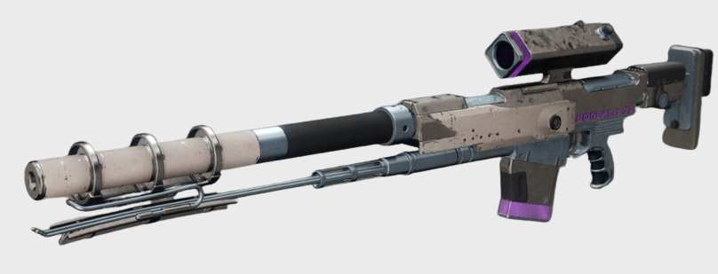

Borealis
Light is a spectrum. Why limit yourself to a single hue?
Price: 10 000 Glimmer

Light is a spectrum. Why limit yourself to a single hue?
The new Pocket Energy Matrix is capable of changing the weapon's elemental alignment to mimic the elemental frequencies of energy types.
No more problems taking out the elemental shield of enemies.
Taking out the elemental shield of an enemy will now transfer a bullet into your magazine. The Pocket Energy Matrix will empower the rest of your shots in the magazine if you match elements.
We have implemented the technology from one of our other weapons to make the weapon even more efficient at range. Our tests have shown that the bullet will hit its target with the same amount of force from all ranges.